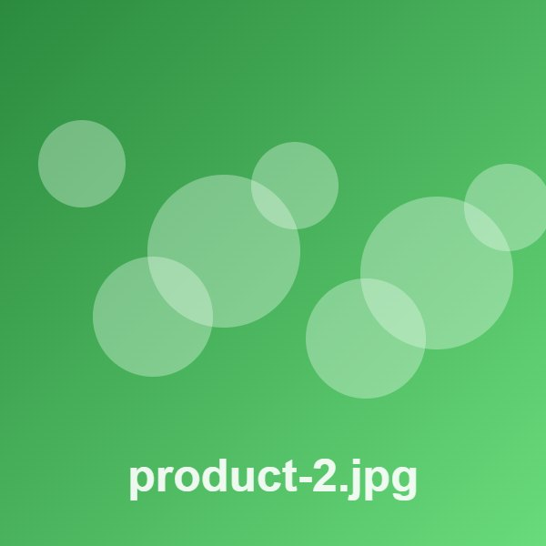

Formats
PNG

WebP (converted to PNG)
GIF 2×2, stretched
SVG file → vector


PNG, JPEG and GIF go to Figma as they are; WebP is converted to PNG; SVG files become editable vectors. A missing file is skipped with a warning.

 SVG file, cover, left top, radius 16px
SVG file, cover, left top, radius 16px<picture> picks hero-small.jpg below 769px and hero.jpg above. The capture uses the image the browser chose (currentSrc).
These use loading="lazy". The capture scrolls through the page first so they load.